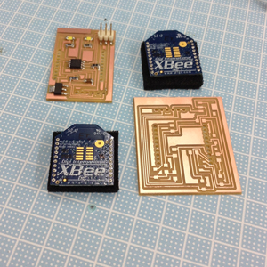
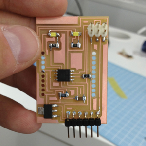
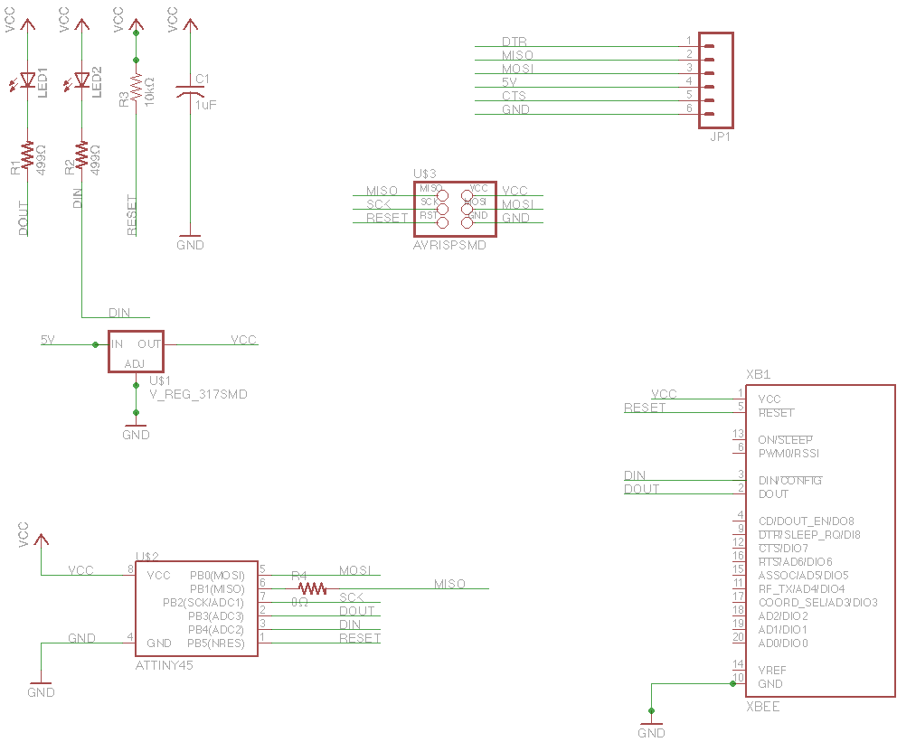
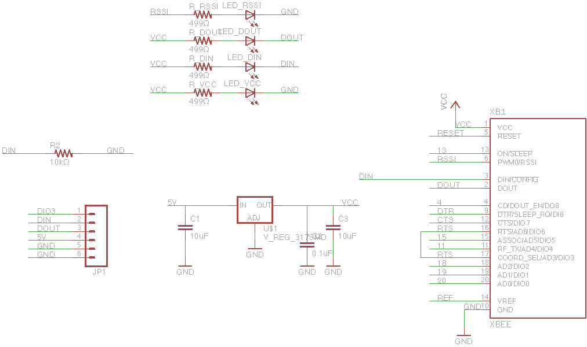
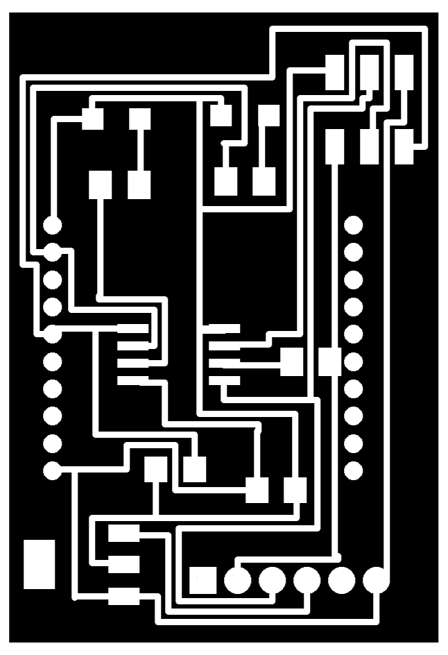
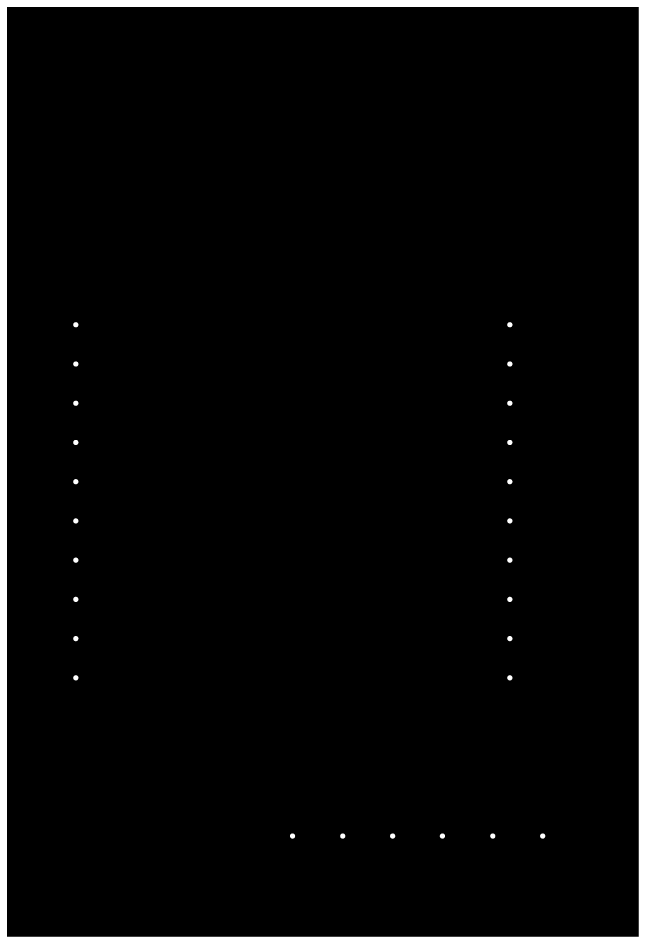
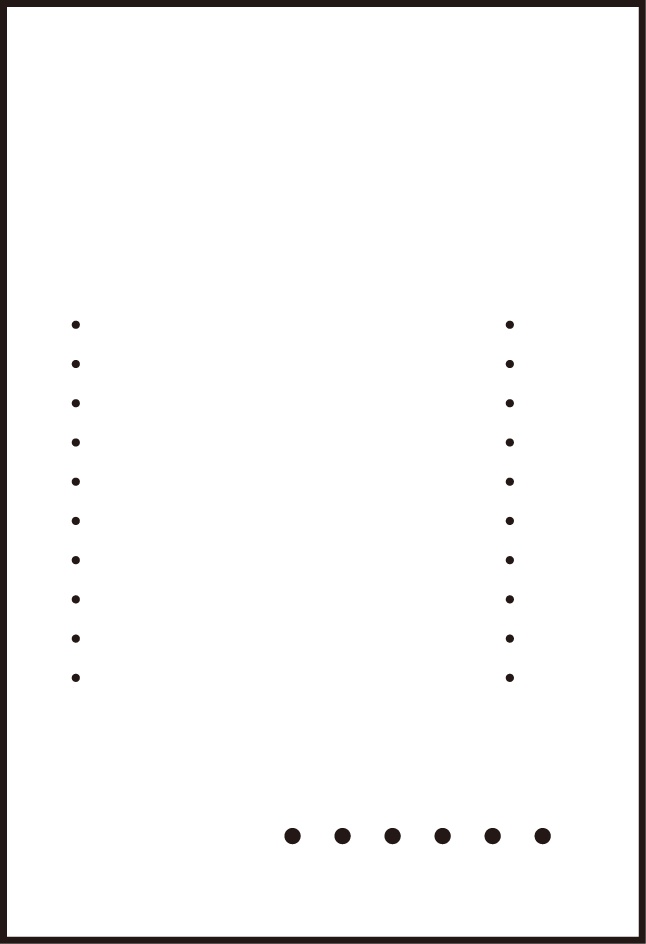

Kousuke Kikuchi
Fab Academy Participant and PhD Candidate
Week 14: Networking and Communications
Summary:
Link to files: Github
hello.bus.45: success
hello.xbee.85: failure


hello.xbee.85 was failed at making holes. I was not able to check the board worked properly. Does anyone know how to make a hole by using Modela and Fab Modules?
hello.bus.45 (MCU was Attiny85)
I succeeded milling, cutting, soldering and programming hello.bus.45 except one problem, the polarity of LED. At the verification of system, I programed LED blink and the board did not blink properly.
The system used in hello.bus.45.c is quite simple: this program defines the node id at macro. Hence, each MCU altered the node id if given an ID. Even though I had a problem on serial communication before, this board worked well. This ID was the important identification of each node. This function can be found at Arduino IDE, Wire.h. See the final project.
This time,
hello.xbee.85
When I think about the final project wireless communications should be needed. So, I tried hello.xbee.85 which can send message one node to the other. I designed two boards following the Matt's example. Xbee was not able to accept 5[V] current. Hence, we must use 3.3 [V] regulator to decrease the voltage current to Xbee. One of the board has Attiny85 which can transmit the information to other board, and the other board can return the same information to the first one.
Schematics of transmitter:

Schematics of receiver:

Since this receiver was followed by the schematics of Sparkfun's product, so schematics itself could have no error. But after milling and cutting, I was not able to setup proper holes of this schematics.

hello.85.xbee.milling.png

hello.85.xbee.cutting.png, with the diameter of the hole was 0.2 [mm]
the result:
The big holes of this board was not able to solder 1x10 2mm female pin header.
[Solution] the cutting.png should reverse the black and white. Hence, if cutting holes into this board, this png format file will be:

Because the endmill of Modela will run on the black side.
Appendix:
A bridge and two nodes.
I was not able to use the flat cables because I was not able to buy the flat cable headers even in Akihabara. Also, I tried to make a connection by using a breadboard, since this communication method is simply to connect Tx, Rx for serial communication and VCC and GND for power supply. However, wrong connection between VCC and GND made a smoke on ATtiny85, ended up in making other node.
Mac user should use Macports version of avrdude.
I found that /usr/local/bin/avrdude was different from /opt/local/bin/avrdude in Serial Communication. With build version, MCU did not communicate with serial communication likewise the failure of it at Input Devices. On the other hand, with macports, it was able to communicate. Maybe version or dependencies were different. To keep the latest version, macports is a powerful tool. To install avrdude and its dependencies, just simply command at terminal like this:
sudo port install avrdude avr-binutils avr-gcc avr-libc